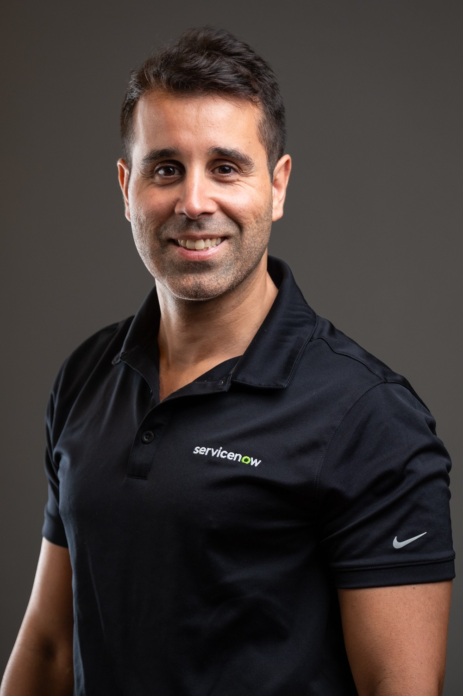

One quiet system. Applied the same way, everywhere.
The reference for anything that carries the Rafael Cardoso name: slides, proposals, social posts, email signatures and the site itself. Everything here is taken from the live rafaelcardoso.com so the two never drift apart.
What the brand stands for
An enterprise consultant, not an agency. The look is engineered and calm - like a well-governed platform: structured, precise, nothing decorative that doesn't earn its place.
ServiceNow Technology & AI Governance. Helping enterprise teams cut through complexity and build platforms people actually trust.
Do changes that last. Governance that holds. Platforms people trust.
- Precise, never cold
- Senior, never pompous
- Structured, never rigid
- Human - "Chat with a human"
The RAF mark
A boxed monogram of "RAF". It is always used as a single colour - charcoal on light grounds, white on dark or accent grounds. Next to the name it forms the lockup used in the site nav.
Lockup
- Mark + name set in IBM Plex Sans SemiBold, 12px gap at 36px mark size.
- The descriptor after the slash is Grey 600, Medium weight. Drop it first when space is tight.
- Informal contexts may use Rafael Cardoso ("Raf"), as in the site footer.
Wordmark

- First name set free, surname in a box: Montserrat Medium (500), all caps, tracked +80. The box stroke is a little thinner than a letter stem. The letters are outlined in the SVG, so the font doesn't need to be installed.
- Inspired by The Mentalist title card. The box echoes the boxed RAF mark. Use it for title slides, video, banners, covers and email signatures.
- Use it at 140px wide or more. Below that, use the RAF mark instead.
- Don't rebuild it in live text, move the box to the first name or box both words. Don't pair it with the RAF mark in the same row, because the two are alternatives.
- Optional descriptor below: Plex Mono, caps, Grey 500 on dark, aligned to the wordmark's width.
Monogram
- The R from the wordmark in a square box, so the monogram and the boxed surname read as one family.
- Use the outline version where the wordmark won't fit. Use the solid version for profile photos, app icons and favicons, where it sits on unknown backgrounds.
- Minimum size: 24px for the outline, 16px for the solid version.
Clear space
Keep a margin of at least a quarter of the mark's width on every side. No text, edges or imagery inside it.
Minimum size
24px on screen / 8mm in print. Below that, use the favicon files, which are drawn for small sizes.
Don't
Stretch or squash it.
Rotate or tilt it.
Recolour it outside the palette.
Add shadows, glows or effects.
Mostly neutral, one blue
White and charcoal carry the page; a family of cool greys builds hierarchy; a single IBM-style blue marks what matters - actions, focus, the signature line. Click any swatch to copy its hex.
Rough usage ratio: 70 white · 18 greys · 9 charcoal · 3 accent. If the blue starts to feel like a theme colour, there's too much of it.
Core
Greys
Text pairings
| Text | Background | Ratio | Use for |
|---|---|---|---|
| Charcoal | White | 18.1:1 | Headings, anything important |
| Grey 700 | White | 8.9:1 | Body copy |
| Grey 600 | White | 5.3:1 | Small labels, captions |
| Accent | White | 5.0:1 | Links, eyebrows |
| White | Charcoal | 18.1:1 | Dark sections |
| Accent Dim | Charcoal | 4.7:1 | Accent on dark |
| Grey 500 | White | 3.2:1 | 18px+ only - never small text |
Three typefaces, three jobs
All free on Google Fonts. Plex Sans speaks, Inter explains, Plex Mono labels. Don't swap roles - mono is never used for paragraphs, Inter is never used for headlines.
IBM Plex Sans
ABCDEFGHIJKLMNOPQRSTUVWXYZ abcdefghijklmnopqrstuvwxyz 0123456789
500 · 600 · 700 - headings, numbers, quotes
Inter
ABCDEFGHIJKLMNOPQRSTUVWXYZ abcdefghijklmnopqrstuvwxyz 0123456789
400 · 500 · 600 - paragraphs, buttons, UI
IBM Plex Mono
ABCDEFGHIJKLMNOPQRSTUVWXYZ abcdefghijklmnopqrstuvwxyz 0123456789
400 · 500 - eyebrows, labels, dates, chips
Scale
38-68px · 1.06 · -0.02em
28-42px · 1.12 · -0.015em
24px · -0.01em
19px · -0.01em
16-19px · 1.6 · Grey 700
15px · 1.75 · Grey 700
13.5px · 1.5 · Grey 600
12px · +0.14em · Accent
11px · +0.06em · Grey 600
The building blocks
Square-ish corners, hairline borders, small blue details. Live versions - hover them.
Primary is charcoal and turns blue on hover. 2px radius. One primary per view.
Plex Mono 11px, pill-shaped. For credentials, frameworks and tech - never for actions.
The coordinate mark (NAME-NN) is the brand's signature - a blueprint reference in the top right of each section. Hide it on mobile.
- Platform governance architecture
- Solution architecture for complex estates
- Technical leadership for change
4px square accent bullet, hairline separators.
ServiceNow MVP
20px radius and a soft lift on hover - reserved for cards, never buttons.
buttons
mark
avatars
cards
- Ease
cubic-bezier(.2,.7,.2,1), 0.25-0.55s. - Reveal on scroll: fade + 12px rise. Hover: 1-6px lift.
- Always honour
prefers-reduced-motion.
Write like a senior peer
First person, plain English, British spelling. Short sentences with a point. Talk about outcomes that last, not activity. Confident enough to skip the jargon.
Do
- Lead with the outcome: "Governance that holds."
- Use "I" - it's one person's practice, not a firm.
- Use numbers only when they're real and checkable.
- British spelling: programme, organisation, colour.
- Keep it warm: "Chat with a human", "Get in touch".
Don't
- Buzzword stacks: "synergistic, AI-powered, best-in-class".
- Exclamation marks or emoji in professional copy.
- "We" or agency language ("our team", "our clients").
- Promises about speed over durability.
- Em dashes - the site uses a plain hyphen with spaces.
Rewrites
| Instead of | Write |
|---|---|
| We leverage cutting-edge AI to drive transformation. | I bring AI inside the control framework, so automation doesn't outrun governance. |
| Contact us today for a free consultation! | Chat with a human. |
| Delivering world-class ServiceNow solutions. | Platforms people trust long after launch day. |
Approved lines
Do changes that last. Governance that holds. Platforms people trust.
I help teams cut through complexity and build platforms people trust.
I want people to trust what I build long after launch day, not just on it.
Monochrome people, blueprint graphics
Portraits run in greyscale with a touch of contrast, colour revealed only on interaction. Graphics come from the blueprint grid: thin grey lines, one blue line drawn in, one blue node.

Grid: Grey 200, 1px. Signal: Accent at 55%, 1.4px. Node: 3.5px accent dot. One signal per composition.
Download the files
The originals served by the site. Grab them from here rather than screenshotting.


IBM Plex Sans · Inter · IBM Plex Mono
In PowerPoint / Word, fall back to Arial for Plex Sans and Inter, Consolas for Plex Mono. Montserrat Medium is only used for the wordmark and is already outlined in the SVGs.
hello@rafaelcardoso.com · rafaelcardoso.com
linkedin.com/in/rafaelmcardoso · nowjedi.com
Title: ServiceNow Technology & AI Governance · London / Lisbon